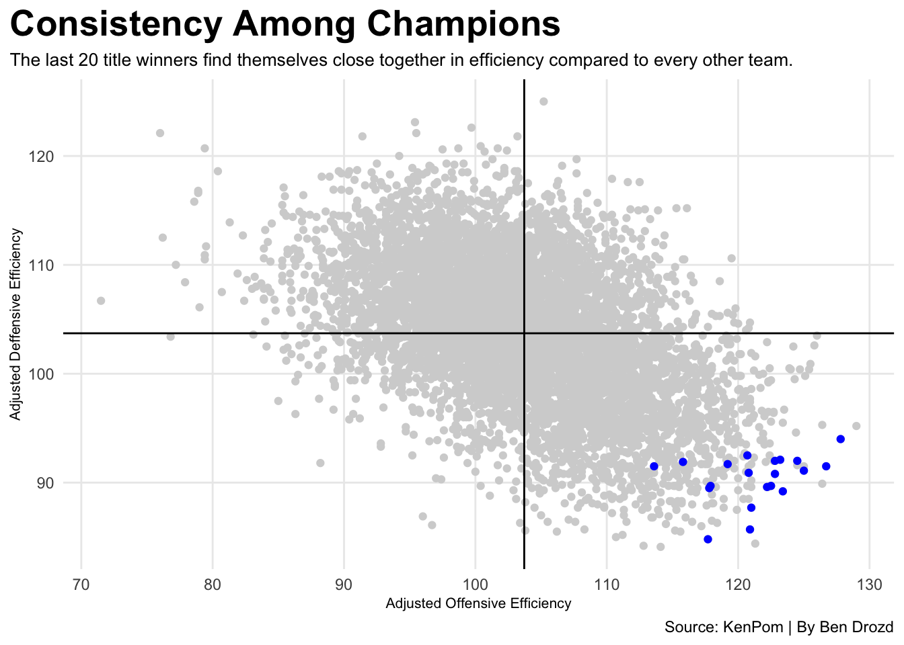

Code
library(tidyverse)
library(ggrepel)
library(gt)
kenpom2024 <- read_csv("KemPom Rankings - 2024.csv") |> mutate(Team = gsub("(\\s)(1[0-6]|[1-9])", "", Team)) |> mutate(Season = 2024) |> mutate(TeamSeason = paste(Team, Season))
kenpom2023 <- read_csv("KemPom Rankings - 2023.csv") |> mutate(Team = gsub("(\\s)(1[0-6]|[1-9])", "", Team)) |> mutate(Season = 2023) |> mutate(TeamSeason = paste(Team, Season))
kenpom2022 <- read_csv("KemPom Rankings - 2022.csv") |> mutate(Team = gsub("(\\s)(1[0-6]|[1-9])", "", Team)) |> mutate(Season = 2022) |> mutate(TeamSeason = paste(Team, Season))
kenpom2021 <- read_csv("KemPom Rankings - 2021.csv") |> mutate(Team = gsub("(\\s)(1[0-6]|[1-9])", "", Team)) |> mutate(Season = 2021) |> mutate(TeamSeason = paste(Team, Season))
kenpom2019 <- read_csv("KemPom Rankings - 2019.csv") |> mutate(Team = gsub("(\\s)(1[0-6]|[1-9])", "", Team)) |> mutate(Season = 2019) |> mutate(TeamSeason = paste(Team, Season))
kenpom2018 <- read_csv("KemPom Rankings - 2018.csv") |> mutate(Team = gsub("(\\s)(1[0-6]|[1-9])", "", Team)) |> mutate(Season = 2018) |> mutate(TeamSeason = paste(Team, Season))
kenpom2017 <- read_csv("KemPom Rankings - 2017.csv") |> mutate(Team = gsub("(\\s)(1[0-6]|[1-9])", "", Team)) |> mutate(Season = 2017) |> mutate(TeamSeason = paste(Team, Season))
kenpom2016 <- read_csv("KemPom Rankings - 2016.csv") |> mutate(Team = gsub("(\\s)(1[0-6]|[1-9])", "", Team)) |> mutate(Season = 2016) |> mutate(TeamSeason = paste(Team, Season))
kenpom2015 <- read_csv("KemPom Rankings - 2015.csv") |> mutate(Team = gsub("(\\s)(1[0-6]|[1-9])", "", Team)) |> mutate(Season = 2015) |> mutate(TeamSeason = paste(Team, Season))
kenpom2014 <- read_csv("KemPom Rankings - 2014.csv") |> mutate(Team = gsub("(\\s)(1[0-6]|[1-9])", "", Team)) |> mutate(Season = 2014) |> mutate(TeamSeason = paste(Team, Season))
kenpom2013 <- read_csv("KemPom Rankings - 2013.csv") |> mutate(Team = gsub("(\\s)(1[0-6]|[1-9])", "", Team)) |> mutate(Season = 2013) |> mutate(TeamSeason = paste(Team, Season))
kenpom2012 <- read_csv("KemPom Rankings - 2012.csv") |> mutate(Team = gsub("(\\s)(1[0-6]|[1-9])", "", Team)) |> mutate(Season = 2012) |> mutate(TeamSeason = paste(Team, Season))
kenpom2011 <- read_csv("KemPom Rankings - 2011.csv") |> mutate(Team = gsub("(\\s)(1[0-6]|[1-9])", "", Team)) |> mutate(Season = 2011) |> mutate(TeamSeason = paste(Team, Season))
kenpom2010 <- read_csv("KemPom Rankings - 2010.csv") |> mutate(Team = gsub("(\\s)(1[0-6]|[1-9])", "", Team)) |> mutate(Season = 2010) |> mutate(TeamSeason = paste(Team, Season))
kenpom2009 <- read_csv("KemPom Rankings - 2009.csv") |> mutate(Team = gsub("(\\s)(1[0-6]|[1-9])", "", Team)) |> mutate(Season = 2009) |> mutate(TeamSeason = paste(Team, Season))
kenpom2008 <- read_csv("KemPom Rankings - 2008.csv") |> mutate(Team = gsub("(\\s)(1[0-6]|[1-9])", "", Team)) |> mutate(Season = 2008) |> mutate(TeamSeason = paste(Team, Season))
kenpom2007 <- read_csv("KemPom Rankings - 2007.csv") |> mutate(Team = gsub("(\\s)(1[0-6]|[1-9])", "", Team)) |> mutate(Season = 2007) |> mutate(TeamSeason = paste(Team, Season))
kenpom2006 <- read_csv("KemPom Rankings - 2006.csv") |> mutate(Team = gsub("(\\s)(1[0-6]|[1-9])", "", Team)) |> mutate(Season = 2006) |> mutate(TeamSeason = paste(Team, Season))
kenpom2005 <- read_csv("KemPom Rankings - 2005.csv") |> mutate(Team = gsub("(\\s)(1[0-6]|[1-9])", "", Team)) |> mutate(Season = 2005) |> mutate(TeamSeason = paste(Team, Season))
kenpom2004 <- read_csv("KemPom Rankings - 2004.csv") |> mutate(Team = gsub("(\\s)(1[0-6]|[1-9])", "", Team)) |> mutate(Season = 2004) |> mutate(TeamSeason = paste(Team, Season))
kenpom2003 <- read_csv("KemPom Rankings - 2003.csv") |> mutate(Team = gsub("(\\s)(1[0-6]|[1-9])", "", Team)) |> mutate(Season = 2003) |> mutate(TeamSeason = paste(Team, Season))
kenpom2002 <- read_csv("KemPom Rankings - 2002.csv") |> mutate(Team = gsub("(\\s)(1[0-6]|[1-9])", "", Team)) |> mutate(Season = 2002) |> mutate(TeamSeason = paste(Team, Season))
kenpom <- bind_rows(kenpom2024, kenpom2023, kenpom2022, kenpom2021, kenpom2019, kenpom2018, kenpom2017, kenpom2016, kenpom2015, kenpom2014, kenpom2013, kenpom2012, kenpom2011, kenpom2010, kenpom2009, kenpom2008, kenpom2007, kenpom2006, kenpom2005, kenpom2004)
champs <- c("Connecticut 2024", "Connecticut 2023", "Kansas 2022", "Baylor 2021", "Virginia 2019", "Villanova 2018", "North Carolina 2017", "Villanova 2016", "Duke 2015", "Connecticut 2014", "Louisville 2013", "Kentucky 2012", "Connecticut 2011", "Duke 2010", "North Carolina 2009", "Kansas 2008", "Florida 2007", "Florida 2006", "North Carolina 2005", "Connecticut 2004")
champions <- kenpom |> filter(TeamSeason %in% champs)
ggplot() +
geom_point(
data=kenpom,
aes(x=AdjO, y=AdjD),
color="lightgrey") +
geom_point(
data=champions,
aes(x=AdjO, y=AdjD),
color="blue") +
geom_vline(xintercept = 103.7156) +
geom_hline(yintercept = 103.7151) +
labs(
x="Adjusted Offensive Efficiency",
y="Adjusted Deffensive Efficiency",
title="Consistency Among Champions",
subtitle="The last 20 title winners find themselves close together in efficiency compared to every other team.",
caption="Source: KenPom | By Ben Drozd"
) +
theme_minimal() +
theme(
plot.title = element_text(size = 20, face = "bold"),
axis.title = element_text(size = 8),
plot.subtitle = element_text(size=10),
panel.grid.minor = element_blank(),
plot.title.position = "plot"
) 